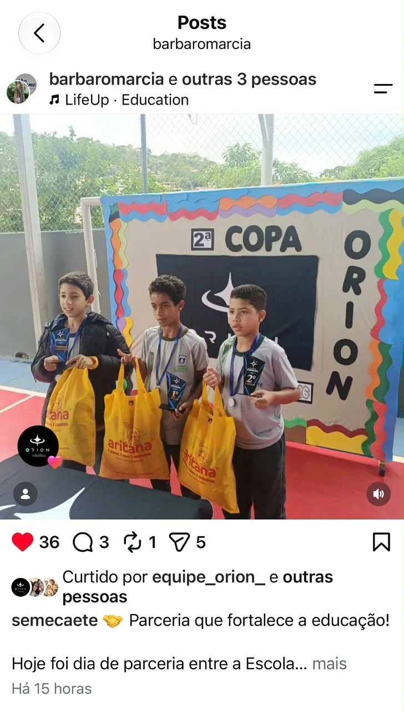
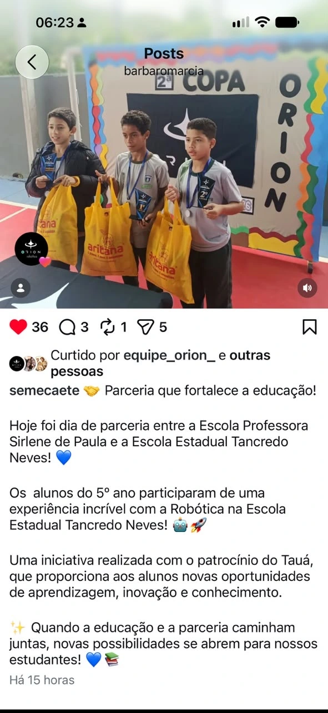

EDUCAÇÃO MUNICIPAL · @semecaete
Escola municipal e estadual, juntas.
A parceria entre a Escola Municipal Professora Sirlene de Paula e a Escola Estadual Tancredo Neves levou os alunos a uma experiência com a robótica. A publicação compartilhada pela educação municipal de Caeté, @semecaete, destaca esse encontro entre as duas redes de ensino.



